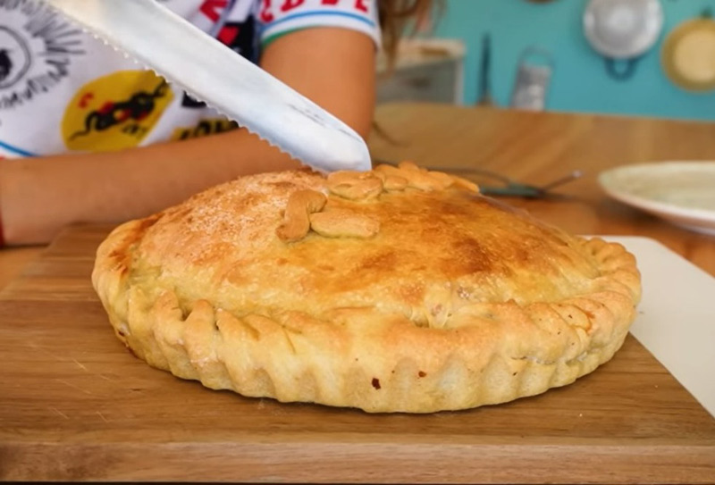

TARTA DE JAMON Y QUESO

Ingredientes
Para el relleno necesitas
- Mayonesa cantidad necesaria
- 200 gr de jamón en fetas
- 250 gr de queso cremoso (queso fresco/mozzarella)
- 2 huevos
- 3 cucharadas de crema de leche
- Sal a gusto
- Rocío vegetal cantidad necesaria
- azúcar opcional
Preparacion
- Rociar la tartera con rocío vegetal, en mi caso usé el de Natura y estirar una de las tapas hasta cubrir toda la superficie.
- Untar una o dos cucharadas de mayonesa Natura, que es la que yo usé, en la tapa que va a ser la base de la tarta.
- Desparramar el jamón hasta cubrir toda la superficie. Agregar los trozos de queso de igual manera.
- Mezclar los huevos, la crema y la sal en un bol. Volcar sobre el relleno de la tarta.
- Poner la otra tapa cubriendo la tarta, pintarla con huevo batido y espolvorear con azúcar (opcional).
- Cocinar en horno a 180° o 200° durante 30 minutos o hasta ver la superficie dorada.
Volver al inicio